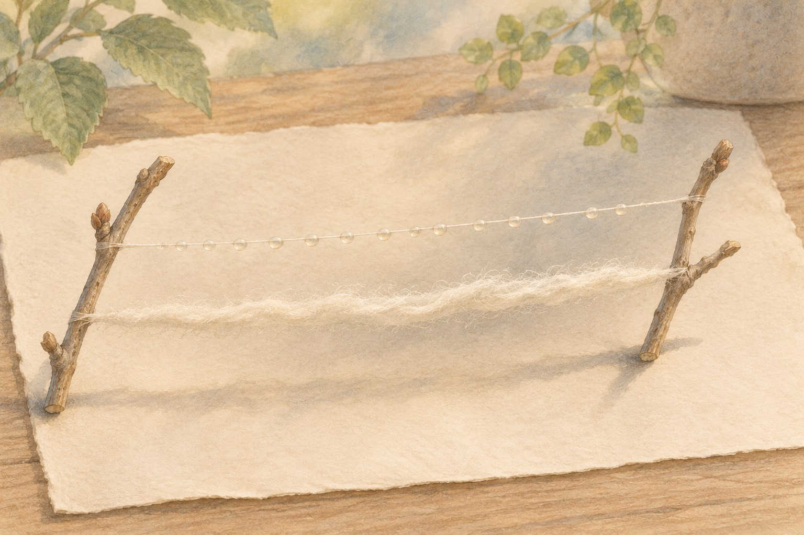

How is a spider web built, and how do its parts work together?
Where shall we look?
Strong dry spokes. A spiral that may hold glue.
Which lines are sticky on an orb web?
Find the center hub, the straight lines that go out like spokes, and the spiral that winds around them.
A little explanation & something to try
On many orb webs, the spokes (radii) and the small hub are dry and strong. The outer spiral often holds tiny glue beads. Spiders walk the dry lines and feel prey on the sticky spiral. Not every web is an orb, and not every spiral is sticky the same way.
Try this. From a few steps away, sketch a web you can see. Mark the hub, three spokes, and one loop of the spiral. Do not touch the silk.

Glue beads, or woolly silk that snags.
How can silk catch without glue?
Find the two silk samples: one with shiny droplets, and one that looks soft and woolly.
A little explanation & something to try
Some spiders make capture silk with glue droplets (ecribellate silk). Others comb out a dry, woolly silk with a special plate called a cribellum (cribellate silk). The woolly silk snags legs and wings without sticky glue. Scientists still study exactly how each kind works best.
Try this. On your sketch, label one spiral loop 'maybe glue' and write one question you still have about silk.
Vibrations travel along the silk.
How does a spider feel a tiny tug?
Find the spider resting near the hub, with one or two legs on the silk.
A little explanation & something to try
Silk carries vibrations. Many spiders keep legs on the radii so a buzz or tug can travel to them. Tiny sensors in the legs help them tell a breeze from a struggling insect. They usually do not need sticky feet on every line because they know the dry paths.
Try this. Tap a table lightly with a pencil, then harder. Tell which tap felt bigger through your hand. That is only a toy model of vibration, not a real web.
Dew catches light so we can see the pattern.
Why does dew make a web easy to see?
Find the morning web with water beads shining on the spiral.
A little explanation & something to try
Cool mornings leave tiny water drops on silk. The drops catch light, so the web that was nearly invisible overnight suddenly shows its pattern. As the air warms, many drops shrink or fall. Dew helps us look; it is not glue from the spider.
Try this. On a cool morning, look for a web on a fence or bush. Count how many spiral loops you can see before the dew fades. Stay back and do not touch.
Web numbers
Six add-and-subtract puzzles tied to dew beads, silk lines and careful looking.
Strong dry spokes. A spiral that may hold glue.
Choose one problem and draw tens as sticks and ones as dots to check your regrouping.
1.Little Wonderer counts 36 dew beads on one spiral loop, then 28 more on the next. How many beads is that together?
36 + 28 =
A small hint
Add 6 and 8 ones. Trade 10 ones for 1 ten.
2.Big Wonderer spots 81 silk lines in a sketch, then erases 47 that were practice marks. How many lines remain?
81 − 47 =
A small hint
Trade 1 ten for 10 ones if needed, then subtract.
3.The little one counts 45 dry radii marks and 37 spiral marks in a notebook. How many marks in all?
45 + 37 =
A small hint
Add the ones, then the tens. Trade if you make 10 ones.
4.A morning count shows 70 dew beads. Later 26 have dried. How many beads are left to see?
70 − 26 =
A small hint
Trade 1 ten for 10 ones, then subtract ones and tens.
5.Big Wonderer times 58 soft table taps, then 19 harder taps. How many taps in the vibration try?
58 + 19 =
A small hint
Add 8 and 9 ones. Trade 10 ones for 1 ten.
6.The big one sketches 93 spiral loops across pages, then crosses out 58 extras. How many loops stay?
93 − 58 =
A small hint
Trade 1 ten for 10 ones if needed, then subtract.
Spider webs, then deeper
Spider Webs
A web in the dew
Little Wonderer stopped on the path. "The bush is wearing lace," the little one whispered. Big Wonderer tipped its head. Overnight the web was almost invisible. Cool air left dew beads on the silk, and the beads caught the morning light. As the day warms, many drops shrink. Dew helps us see; it is not the spider's glue.
Why can a web be hard to see at night, then easy at dawn?
Hub, radii, spiral
Many orb webs share three parts. The hub is the small center. Radii are the straight spokes. The capture spiral winds around them. On many webs the radii stay dry and strong, while the spiral holds tiny glue beads. Spiders often walk the dry lines. Not every spider builds an orb, so what you find outside may look different.
Which parts of an orb web are often dry?
Silk that catches
Spiders make more than one silk. Dragline silk is strong for bridges and safety lines. Capture silk is for catching. Some spiders coat the spiral with glue droplets. Others comb out a dry, woolly silk with a cribellum plate. That woolly silk can snag without sticky glue. Researchers still compare how each kind works in wind and rain.
How can a web catch prey without sticky glue?
Feeling a tug
Big Wonderer watched the hub. A spider rested with legs on the radii. Silk carries vibrations, so a tiny tug can travel to those legs. Sensors help tell a breeze from prey. The spider usually does not need every line to be sticky, because it knows the dry paths home.
How can a spider notice prey without watching every second?
Look, don't touch
Little Wonderer lifted a pencil. Big Wonderer stayed a step back. A web is a home and a trap. Touching can break hours of work and may put a spider or a child too close. Sketch from a safe distance. Use eyes, a notebook, or a camera zoom. Leave the silk where it is.
Why should we look at webs without touching them?
Beads of light
Morning dew is water from the air, not spider glue. The drops sit on silk and sparkle, so the spiral pattern pops into view. Later the air warms and many beads shrink or fall. If you miss the dew, a soft side light may still reveal dry radii. Keep looking with care.
What makes dew different from the spider's sticky glue?